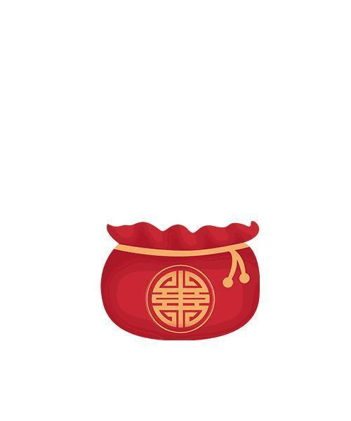

元旦快乐吖

寒流随着元旦来袭，请漂亮小姐、帅气先生添衣保暖，丑的就不用啦!此推送经过处理，仅帅哥、美女能收到！开心吗？元旦快乐!
元旦，即公历的1月1日，是世界多数国家通称的“新年”。元，谓“始”，凡数之始称为“元”；旦，谓“日”；“元旦”意即“初始之日”。元旦又称“三元”，即岁之元、月之元、时之元。
那么今年元旦你在哪呢？
是在家跟家人一起看跨年晚会吗？
还是跟你的Ta彼此拥抱等待跨年的钟声呢？
亦或是孤身一人躺在床上宠幸手机呢？
无论你在哪，在做什么，在新的一年来临之际，请不要忘记对亲爱的爸爸、妈妈说一句：元旦快乐呦
也许在过去的一年里我们有许多不为人知的心酸与艰难，但是获得的成就也让我们感到了欢欣与鼓舞
也许在过去的一年里有许多难过的泪水默默流在心里，但是也有许多的欢笑和愉悦始终伴随着一次又一次心灵的放飞
也许在过去的一年里我们有过伤心与绝望，但是坚定的信念、美好的理想和希望让我们一次次振作，跌倒了再爬起来
在新的一年里，我们也要不断刷新自己的目标
前进前进再前进！
有这样一句话：
“我能想到的最好的道别，就是明天见。”
而我们能留给新的一年的期待就是：
“去年我很好，今年会更好。”

编辑：李亭熹
图片：网络

扫码关注
送你小心心